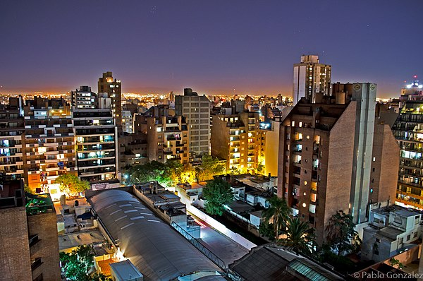
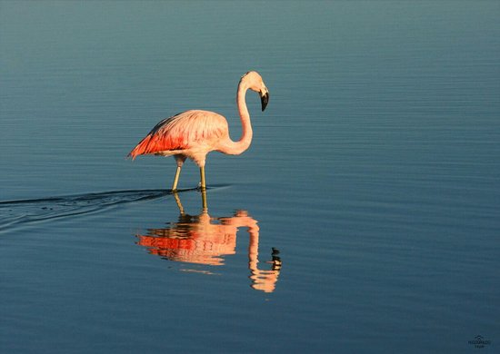
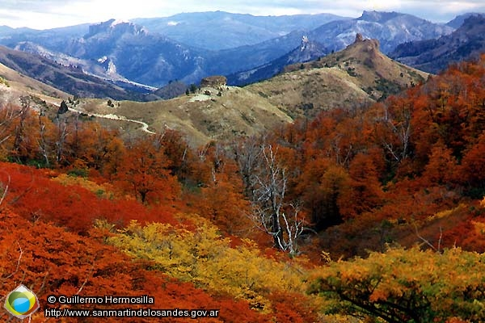
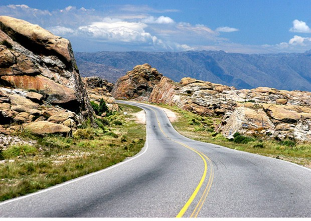
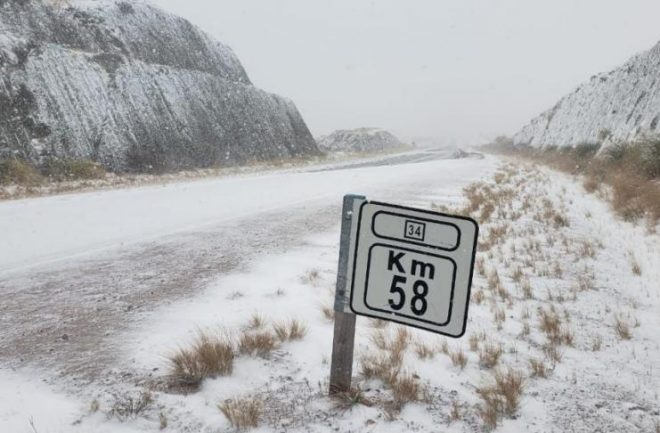
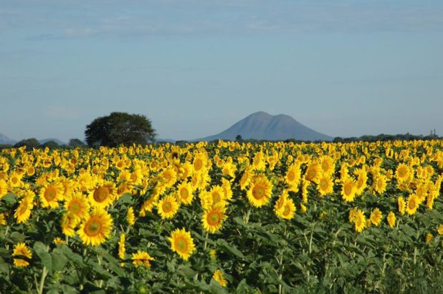
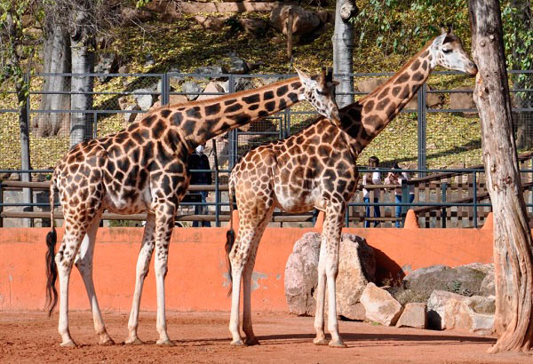

<header>
    <div class="row">
        <div class="col-1 col-sm-12 col-md-7 col-lg-7 col-xl-7">
             
        </div>
        <div class="col-2 col-sm-12 col-md-5 col-lg-5 col-xl-5">
            <div class="contenedor">
                <input type="text" id="inputSearch" placeholder="Buscar">
                <div class="btn" id="btn-search">
                    <i class="fa-solid fa-magnifying-glass" id="icon-search"></i>
                </div>
                
            </div>
        </div>
    </div>
</header>
<ul id="box-search">
    <li><a href="#"><i class="fa-solid fa-magnifying-glass"></i>Región Centro</a></li>
    <li><a href="#"><i class="fa-solid fa-magnifying-glass"></i>Región Norte</a></li>
    <li><a href="#"><i class="fa-solid fa-magnifying-glass"></i>Región Este</a></li>
    <li><a href="#"><i class="fa-solid fa-magnifying-glass"></i>Región Sureste</a></li>
    <li><a href="#"><i class="fa-solid fa-magnifying-glass"></i>Región Sur</a></li>
    <li><a href="#"><i class="fa-solid fa-magnifying-glass"></i>Región Oeste</a></li>
</ul>
<div id="carouselExampleIndicators" class="carousel slide">
    <div class="carousel-indicators">
        <button type="button" data-bs-target="#carouselExampleIndicators" data-bs-slide-to="0" class="active" aria-current="true" aria-label="Slide 1"></button>
        <button type="button" data-bs-target="#carouselExampleIndicators" data-bs-slide-to="1" aria-label="Slide 2"></button>
        <button type="button" data-bs-target="#carouselExampleIndicators" data-bs-slide-to="2" aria-label="Slide 3"></button>
        <button type="button" data-bs-target="#carouselExampleIndicators" data-bs-slide-to="3" aria-label="Slide 4"></button>
        <button type="button" data-bs-target="#carouselExampleIndicators" data-bs-slide-to="4" aria-label="Slide 5"></button>
        <button type="button" data-bs-target="#carouselExampleIndicators" data-bs-slide-to="5" aria-label="Slide 6"></button>
        <button type="button" data-bs-target="#carouselExampleIndicators" data-bs-slide-to="6" aria-label="Slide 7"></button>
        <button type="button" data-bs-target="#carouselExampleIndicators" data-bs-slide-to="7" aria-label="Slide 8"></button>
    </div>
    <div class="carousel-inner">
        <div class="carousel-item active">
            
        </div>
        <div class="carousel-item">
            
        </div>
        <div class="carousel-item">
            
        </div>
        <div class="carousel-item">
            
        </div>
        <div class="carousel-item">
            
        </div>
        <div class="carousel-item">
            
        </div>
        <div class="carousel-item">
            
        </div>
        <div class="carousel-item">
            
        </div>
    </div>
    <button class="carousel-control-prev" type="button" data-bs-target="#carouselExampleIndicators" data-bs-slide="prev">
      <span class="carousel-control-prev-icon" aria-hidden="true"></span>
      <span class="visually-hidden">Previous</span>
    </button>
    <button class="carousel-control-next" type="button" data-bs-target="#carouselExampleIndicators" data-bs-slide="next">
      <span class="carousel-control-next-icon" aria-hidden="true"></span>
      <span class="visually-hidden">Next</span>
    </button>
</div>

